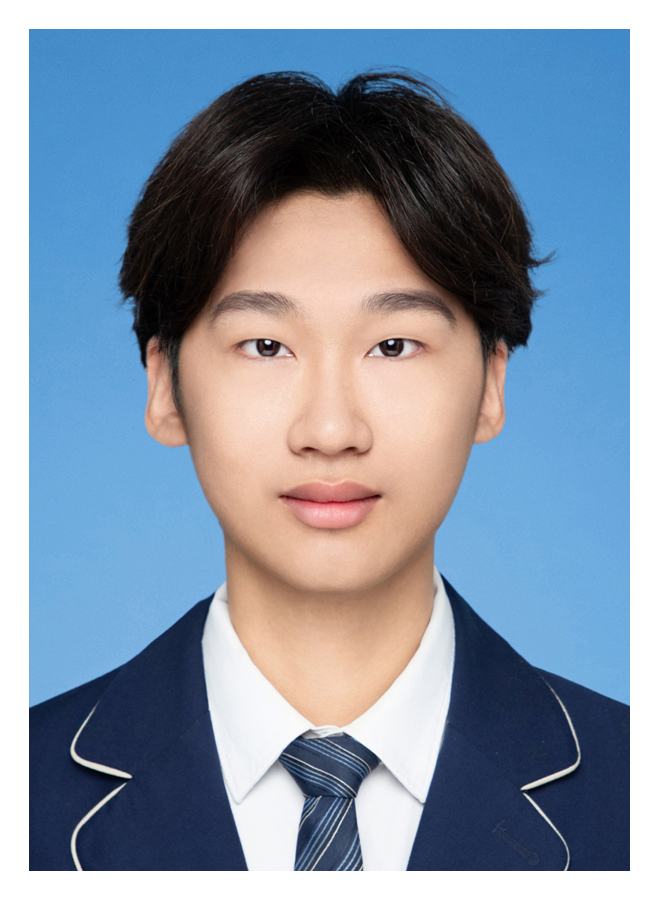

Robust Generalization
Learning under covariate, label, and mixed distribution shifts, with an emphasis on behavior outside the training domain.
Machine Learning Researcher
I build reliable learning systems that generalize beyond the training distribution, use limited high-quality data efficiently, and connect domain knowledge with modern machine learning.

Research at the intersection of robust learning, data, and scientific discovery.
I am a master's student at the School of Software Engineering, University of Science and Technology of China. I received my bachelor's degree in Intelligent Science and Technology from Hunan University.
My research asks a practical question: how can a model remain useful when the data distribution shifts, supervision is noisy or scarce, and physical structure matters? I approach this through robust generalization, uncertainty-aware data selection, neural operators, and agent-enhanced learning.
Three connected themes across my published and accepted work.
Learning under covariate, label, and mixed distribution shifts, with an emphasis on behavior outside the training domain.
Uncertainty modeling and data selection methods that make scarce high-quality supervision go further.
Injecting physical priors, operators, and expert routing into models for complex scientific fields and decisions.
Only peer-reviewed work that has been published or formally accepted is listed here.
Decouples structural invariance from reaction-template adaptability through spectral domain discovery, LLM-based knowledge augmentation, and bilevel learning.
Uses physical tolerance intervals to separate measurement variation from epistemic uncertainty, then guides dynamic theory-data sampling.
Maps molecular geometry directly to full-space electron-density fields through quantum priors, hybrid FNO-CNN modeling, and density-aware expert routing.
Professional Master's · Suzhou Software Engineering
School of Software Engineering
Bachelor's · Intelligent Science and Technology
Let’s connect